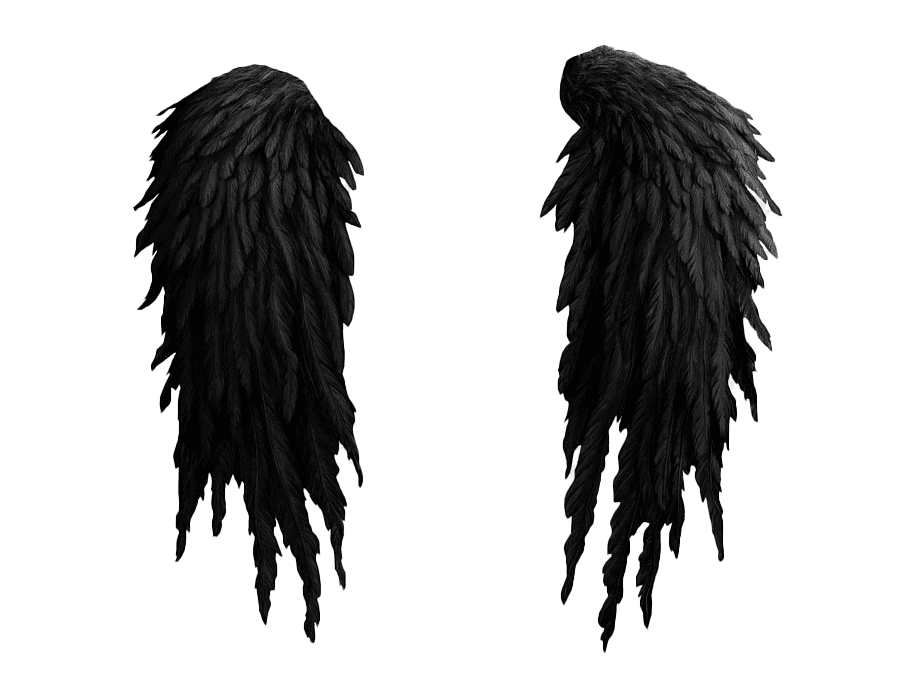
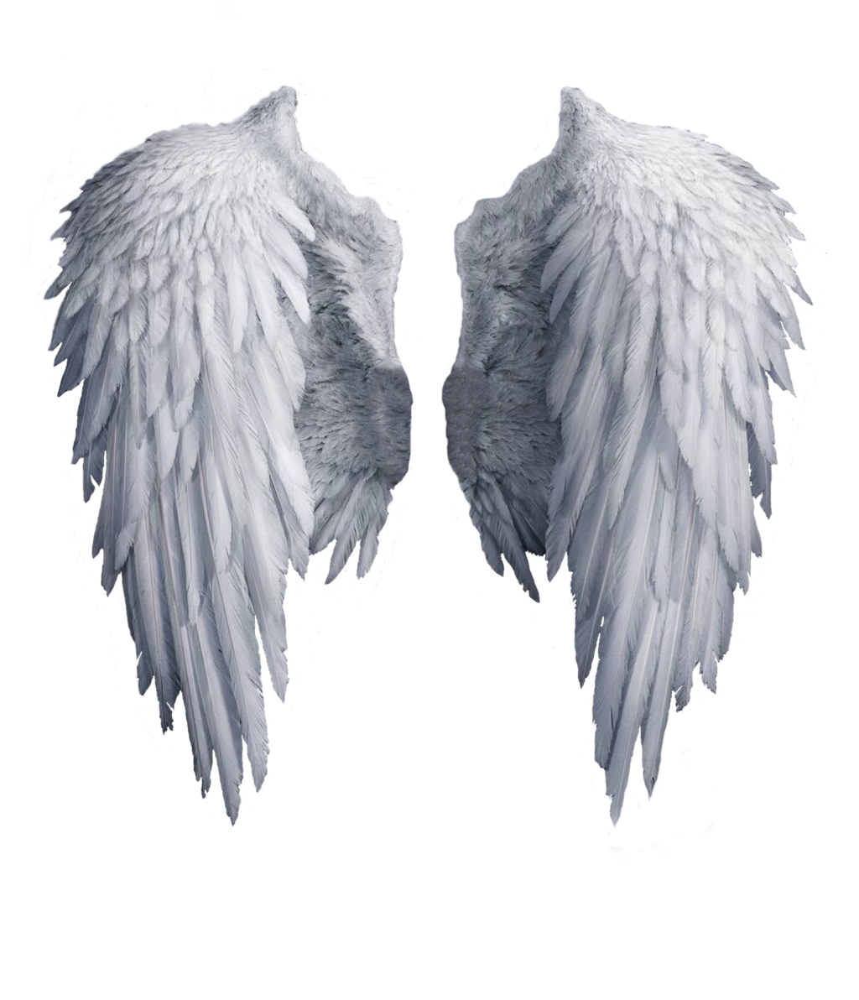

Atreia
- Due to a cataclysmic event after the Millennium War, the Tower of Eternity is now broken, and rifts in the fabric of space known collectively as The Abyss now occupy much of the centre of Atreia. What was once a single tower is now two towers divided by the two Atreias, the Tower of Light, and the Tower of Darkness.
